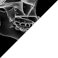
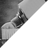
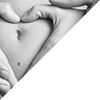

Home
X-rays
X-rays are a vital and necessary part of dental diagnostic process. Without them, certain dental conditions can and will be missed. X-rays detect much more than cavities. With an x-ray the dentist can survey erupting teeth, diagnose bone diseases, evaluate the results of an injury, or plan orthodontic treatment. If dental problems are found and treated early, dental care is more comfortable and affordable. We are particularly careful to minimize the exposure of their patients to radiation. With contemporary safeguards, the amount of radiation received in a dental x-ray examination is extremely small. The risk is negligible. In fact, the dental radiographs represent a far smaller risk than an undetected and untreated dental problem. Lead body aprons and shields are used as a protection. We use digital equipment which filters out unnecessary x-rays and restricts the x-ray to the area of interest.
Sports
Sports guards are not something we always think about when you or your child are out on the field. An athlete is 60 times more likely to suffer harm to the teeth. When choosing a sports guard, find one that fits properly and comfortable, is resilient and tear resistant, easy to clean and doesn’t restrict speech or breathing. For more questions be sure to ask us at your next visit or call and make an appointment today.
Fluoride
Fluoride is a mineral that occurs naturally in all water sources, including the oceans. Research has shown that fluoride not only prevents cavities in children and adults, it also helps repair the early stages of tooth decay even before the decay is visible. During childhood, when teeth are still forming, fluoride works by making tooth enamel more resistant to the acid that causes tooth decay. For adolescents and adults, the benefits are just as great. Fluoride helps repair or re-mineralize areas where the acid attacks have already begun. For older adults, fluoride has been effective in reducing tooth decay along the gum line (often called "root" caries).
Pregnancy?
During Pregnancy, your hormone levels rise considerably. Gingivitis is especially common during the second through the eighth months of pregnancy. Gingivitis may cause red, puffy, or tender gums that tend to bleed easily. If serious enough it could lead to periodontal disease. It is important to brush thoroughly twice a day with a fluoride toothpaste and floss. Keeping a healthy diet while pregnant will help prevent tooth decay and keeps you and your baby healthy.